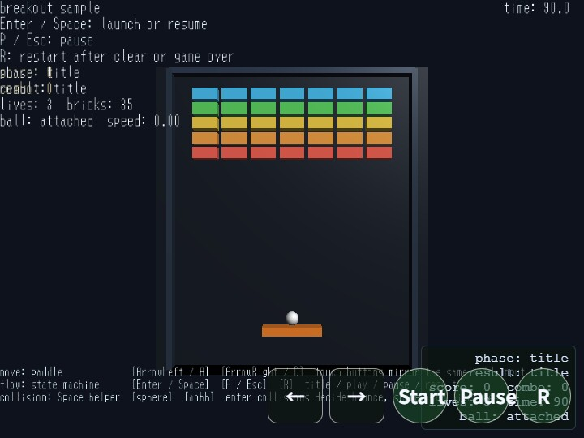

breakout
English | 日本語

Overview
- This sample builds a simple breakout game with 3D presentation by using
webg's basic game-oriented features - It uses
WebgAppas the entry point and collects input, HUD, scene phase, game-state management, and display messages into a single processing flow - The board progresses through four states,
title / play / pause / result, and switches naturally according to input, remaining bricks, remaining time, and remaining lives - The appearance is close to 2D, but the game is built by generating
Paddle / Ball / Brick / Wallas 3D shapes and combining them with 2D-like coordinate management - The
Message-based HUD shows score, combo, time, lives, phase, and ball state so the game flow can be followed from on-screen information alone - Touch buttons for left / right movement and
Start / Pause / Rare provided so the same game actions can be performed through both keyboard and touch input
How to Run
- Open ./breakout.html
- Use a browser with WebGPU support, and check the help panel and HUD together with the sample when needed
webg Features Used
WebgApp: initializesScreen / Shader / Space / Input / Message / HUD / debug toolstogether- Sample-side
GameStateManager: organizes state transitions fortitle / play / pause / result InputController: gathers normalized key names from keyboard and touch input into action namesTouch: enters left / right movement and launch / pause / restart through touch buttonsShape: creates arbitrarily sized box shapes for the paddle, bricks, walls, backdrop, and related objectsPrimitive: generates the sphere mesh for the ballSpace: places each shape as a node and builds the 3D scene for displayMessage: displays guide rows, control rows, game HUD, and statusToast: displays temporary state notifications such as serve, pause, miss, and result
Implementation Characteristics
- Input is collected into
left / right / launch / pause / restartthroughapp.registerActionMap() leftcorresponds toArrowLeft / A, andrightcorresponds toArrowRight / Dlaunchcorresponds toEnter / Space,pausecorresponds toP / Esc, andrestartcorresponds toR- The touch buttons
← / →are treated as hold input and used for left-right paddle movement - The touch buttons
Start / Pause / Rare treated as action input and correspond tolaunch / pause / restart - Collision shapes are also attached to
Ball / Paddle / Brick / Wall, but the actual game judgement in this sample is handled by the sample-side 2D checks usingmakeBox()andcircleIntersectsBox() - Ball movement divides one frame into multiple smaller steps so the ball is less likely to tunnel through walls or bricks even at high speed
- Paddle reflection changes direction according to where on the paddle the ball hits
- When the ball hits a brick, only one brick disappears and
scoreandcomboare updated - When the ball falls to the floor side,
livesdecreases, and if lives remain the ball is returned to the paddle - When all bricks are removed the game is cleared, when
livesreaches0it becomes game over, and when time reaches0it enters the result state as time up
Checkpoints
- Confirm that
Enter / Spacemoves the game fromtitletoplayand launches the ball from the paddle - Confirm that
ArrowLeft / ArrowRight / A / Dmove the paddle immediately, and that the touch buttons← / →produce the same movement - Confirm that
P / Escenters pause and thatEnter / SpaceorP / Esccan return to play - During play, confirm that when the ball hits the paddle the reflection direction changes according to the hit position
- Confirm that when the ball hits a brick, only one brick disappears and
scoreandcomboare updated - Confirm that the ball reflects from the left and right walls and from the ceiling
- Confirm that when the ball falls to the floor side,
livesdecreases, and if lives remain the ball is returned to the paddle - Confirm that removing all bricks, reaching
0lives, or reaching0time enters the result state, and thatRreturns to the title state - Confirm that the touch buttons
Start / Pause / Rcan also start, stop, resume, and restart just like the keyboard - Confirm that the HUD displays
score / combo / time / lives / phase / ballstate so the game progress can be followed
Controls
ArrowLeft / A: move the paddle leftArrowRight / D: move the paddle rightEnter / Space: start from the title screen, resume from pause, or launch the ball from the serve-wait state during playP / Esc: pause, or resume from pauseR: return from result to title- Touch button
←: move the paddle left - Touch button
→: move the paddle right - Touch button
Start: trigger the launch action - Touch button
Pause: trigger the pause action - Touch button
R: trigger the restart action
State Transitions
title: initial state. The level is initialized and the sample waits for a start inputplay: the state where the actual game progresses. It updates paddle movement, ball movement, reflection, brick destruction, and remaining timepause: paused state. Game progress stops, but paddle movement input can still be checkedresult: finished state. It displays the result ofclear / game over / time upand waits for restart input
Notes
- As a minimal verification sample for game-oriented APIs, this sample prioritizes an easy-to-follow flow for state, input, HUD, and collision checks over flashy visuals
- The ball is created with
Primitive.sphere(), while the paddle, bricks, walls, and backdrop are created as arbitrarily sized box meshes throughcreateBoxShape()inside the sample - The ball uses a sphere collision shape, and the paddle, bricks, and walls use AABB collision shapes
- However, the collision test used for actual game progression is not the
enterresult fromSpace.stepCollisions(), but the sample-side simplified 2D check usingcircleIntersectsBox() - Nodes and collision bodies are registered in
Space, but in this sample it is used mainly as the foundation for placing game elements in a 3D scene - The result screen groups
clear / game over / time upinto the same phase and changes only the reason text - Input processing assumes normalized key names and action names from the
WebgApp / InputControllerside instead of handling rawevent.keydirectly